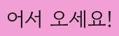

Hello and Welcome to my little blog. My name is Niloofar and I'm a senior programmer.
I'm learning the beautiful Korean language, and I'm going to share my quick notes with everybody who wants to learn the same way. Hope it helps and you enjoy.
If you have any question about the notes, let me know. I'll help you if I know the answer.
세상에는 수백 개의 언어가 있지만, 미소는 그들 모두를 말합니다.
There are hundreds of languages in the world, but a smile speaks them all.
